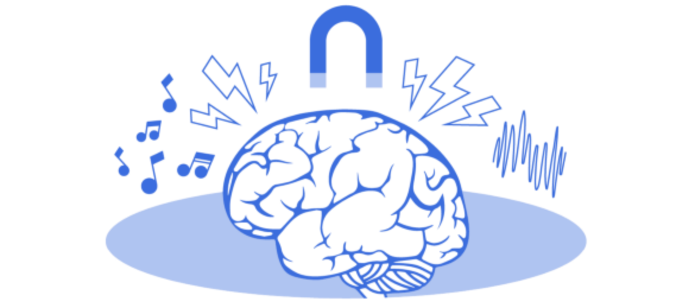

Wearable, non-invasive brain devices for sleep, focus, and pain
Of all of the topics in neuroscience right now, neuromodulation is the most exciting. Neuromodulation is the alteration of nerve activity through the targeted delivery of a stimulus, such as electrical stimulation or chemical agents, to specific neurological sites in the body. Most interesting are the non-pharmacological uses, and honing in on the use of stimulation delivered invasively or non-invasively to either the central or peripheral nervous system.
Neuromodulation is exciting for two reasons. First, because of the enormous therapeutic potential. The idea of using stimulation to augment the nervous system and treat so many pressing conditions is thrilling, particularly because many of the conditions targeted are “drug resistant” or untreatable by pharmacological means. Second, we have varied modalities at our disposal to stimulate the nervous system—electricity, sound, ultrasound, magnetics, invasive, non-invasive. Having a “toolkit” of therapeutic options is a clinician’s dream.
You can read my thoughts on neuromodulation, and this blog and webinar on the topic of sleep and how it might be neuro-modulated. You may recall that the Egyptians and Romans explored neuromodulation as a therapy, including using electric fish (not kidding!) for the treatment of headaches.
Through our work at Prime Movers Lab we have done a deep dive into this investment area. We discovered the therapeutic landscape is vast—including therapies for peripheral pain, stroke recovery, headaches, tinnitus, insomnia, sleep apnea, opioid withdrawal, PTSD, major depression, memory encoding, essential tremor, epilepsy, and more.